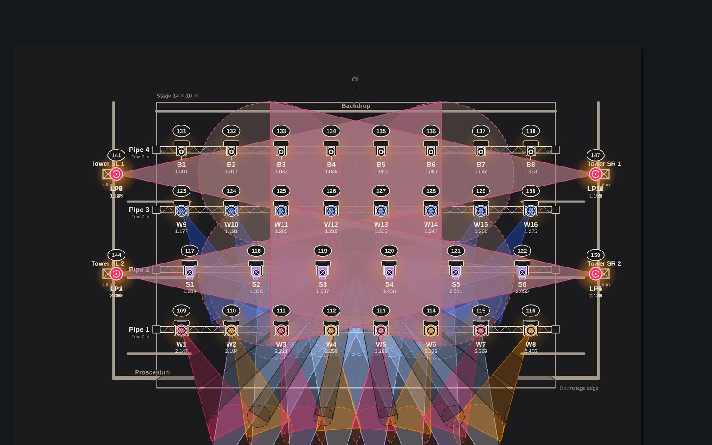

Plot
Scaled plot and hanging positions
Stage dimensions, pipes, booms and upright towers are defined at true scale. Every fixture sits on the plot with its unit number, channel, DMX address and colour, and beams and focus areas can be shown on the same drawing.
- Proscenium, black box and arena templates
- Thousands of fixture models with modes and channel maps
- GDTF and Open Fixture Library support

